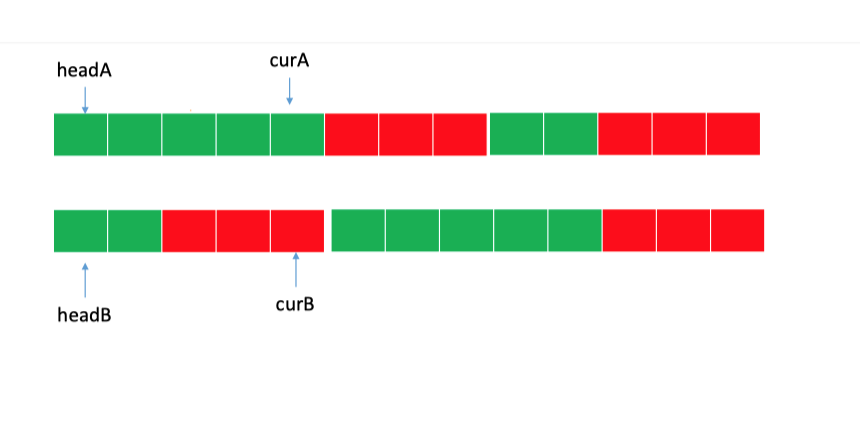

啦啦啦啦啦啦啦啦啦
实验室的小伙伴一直在实验室打电话
哎 生活不易 猪猪叹气
既然不能专心刷题，
那就来和链表玩一会把
～～～
👇 先来一道简单的
调整调整心态
🏷️🏷️🏷️🏷️🏷️🏷️🏷️🏷️🏷️🏷️🏷️🏷️🏷️🏷️🏷️🏷️🏷️🏷️🏷️🏷️🏷️🏷️🏷️🏷️🏷️🏷️🏷️🏷️🏷️🏷️🏷️🏷️🏷️🏷️🏷️🏷️🏷️🏷️🏷️🏷️🏷️🏷️🏷️🏷️🏷️🏷️🏷️🏷️🏷️🏷️ ## 203. 移除链表元素 删除链表中等于给定值 val 的**所有节点**。 示例: 输入: 1->2->6->3->4->5->6, val = 6 输出: 1->2->3->4->5 `这道题太简单了就弄个哑节点 然后遍历链表 只要遇到相同的就把当前元素的pre指向cur的next即可.哨兵节点广泛应用于树和链表中，如伪头、伪尾、标记等，它们是纯功能的，通常不保存任何数据，其主要目的是使链表标准化，如使链表永不为空、永不无头、简化插入和删除。`public ListNode removeElements(ListNode head, int val) {
ListNode dummy = new ListNode(-1);
dummy.next = head;
ListNode cur = head,pre = dummy;
while(cur!=null){
if(cur.val!=val){
pre = cur ;
}else{
pre.next = cur.next ;
}
cur = cur.next;
}
return dummy.next;
}🏷️🏷️🏷️🏷️🏷️🏷️🏷️🏷️🏷️🏷️🏷️🏷️🏷️🏷️🏷️🏷️🏷️🏷️🏷️🏷️🏷️🏷️🏷️🏷️🏷️🏷️🏷️🏷️🏷️🏷️🏷️🏷️🏷️🏷️🏷️🏷️🏷️🏷️🏷️🏷️🏷️🏷️🏷️🏷️🏷️🏷️🏷️🏷️🏷️🏷️
2. 两数相加
给你两个 非空 的链表，表示两个非负的整数。它们每位数字都是按照 逆序 的方式存储的，并且每个节点只能存储 一位 数字。
请你将两个数相加，并以相同形式返回一个表示和的链表。
你可以假设除了数字 0 之外，这两个数都不会以 0 开头。
输入：l1 = [2,4,3], l2 = [5,6,4]
输出：[7,0,8]
解释：342 + 465 = 807.
将两个链表看成是相同长度的进行遍历，如果一个链表较短则在前面补 00，比如 987 + 23 = 987 + 023 = 1010 每一位计算的同时需要考虑上一位的进位问题，而当前位计算结束后同样需要更新进位值如果两个链表全部遍历完毕后，进位值为 1，则在新链表最前方添加节点 1**小技巧**：对于链表问题，返回结果为头结点时，通常需要先初始化一个预先指针 pre，该指针的下一个节点指向真正的头结点head。使用预先指针的目的在于链表初始化时无可用节点值，而且链表构造过程需要指针移动，进而会导致头指针丢失，无法返回结果
class Solution {
public ListNode addTwoNumbers(ListNode head1, ListNode head2) {
ListNode nummy = new ListNode(0);
ListNode cur = nummy,l1=head1,l2=head2;
int carry = 0 ;
while(l1!=null||l2!=null){
int num1 = l1!=null?l1.val:0;
int num2 = l2!=null?l2.val:0;
int sum = num1+num2+carry;
carry=sum/10;
cur.next=new ListNode(sum%10);
cur=cur.next;
if(l1!=null) l1=l1.next;
if(l2!=null) l2=l2.next;
}
if(carry>0) cur.next = new ListNode(carry);
return nummy.next;
}
}🏷️🏷️🏷️🏷️🏷️🏷️🏷️🏷️🏷️🏷️🏷️🏷️🏷️🏷️🏷️🏷️🏷️🏷️🏷️🏷️🏷️🏷️🏷️🏷️🏷️🏷️🏷️🏷️🏷️🏷️🏷️🏷️🏷️🏷️🏷️🏷️🏷️🏷️🏷️🏷️🏷️🏷️🏷️🏷️🏷️🏷️🏷️🏷️🏷️🏷️
160. 相交链表 面试题 02.07. 链表相交 剑指 Offer 52. 两个链表的第一个公共节点
编写一个程序，找到两个单链表相交的起始节点。pA走过的路径为A链+B链,pB走过的路径为B链+A链pA和pB走过的长度都相同，都是A链和B链的长度之和，相当于将两条链从尾端对齐，如果相交，则会提前在相交点相遇，如果没有相交点，则会在最后相遇

public class Solution {
public ListNode getIntersectionNode(ListNode headA, ListNode headB) {
//两个链表相交，相交后的长度是相同的。此时需要消除链表的长度差
if(headA==null||headB==null) return null;
ListNode ha=headA,hb=headB;
while(ha!=hb){
ha=(ha==null)?headB:ha.next;
hb=(hb==null)?headA:hb.next;
}
return ha;
}
}👇 小的串一串，大的串一串，最后两串连一串……
---🏷️🏷️🏷️🏷️🏷️🏷️🏷️🏷️🏷️🏷️🏷️🏷️🏷️🏷️🏷️🏷️🏷️🏷️🏷️🏷️🏷️🏷️🏷️🏷️🏷️🏷️🏷️🏷️🏷️🏷️🏷️🏷️🏷️🏷️🏷️🏷️🏷️🏷️🏷️🏷️🏷️🏷️🏷️🏷️🏷️🏷️🏷️🏷️🏷️🏷️
86. 分隔链表(下一道题变形题)
给你一个链表和一个特定值 x ，请你对链表进行分隔，使得所有小于 x 的节点都出现在大于或等于 x 的节点之前。
你应当保留两个分区中每个节点的初始相对位置。
输入：head = 1->4->3->2->5->2, x = 3
输出：1->2->2->4->3->5遍历结束后，我们将large的next 指针置空，这是因为当前节点复用的是原链表的节点，而其next 指针可能指向一个小于 x 的节点，我们需要切断这个引用
large最后是合并链表的最后一个元素，最后一个元素的next指向null
如果最后一个large刚好指向一个small的节点，就会有环了
class Solution {
public ListNode partition(ListNode head, int x) {
ListNode l1 = new ListNode(-1);
ListNode l2 = new ListNode(-1);
ListNode cur = head;
ListNode small = l1;
ListNode large = l2;
while(cur!=null){
if(cur.val<x){
small.next =cur;
small = small.next;
}else{
large.next = cur;
large = large.next;
}
cur = cur.next;
}
large.next = null;
small.next = l2.next;
return l1.next;
}
}🏷️🏷️🏷️🏷️🏷️🏷️🏷️🏷️🏷️🏷️🏷️🏷️🏷️🏷️🏷️🏷️🏷️🏷️🏷️🏷️🏷️🏷️🏷️🏷️🏷️🏷️🏷️🏷️🏷️🏷️🏷️🏷️🏷️🏷️🏷️🏷️🏷️🏷️🏷️🏷️🏷️🏷️🏷️🏷️🏷️🏷️🏷️🏷️🏷️🏷️
嘟嘟嘟嘟嘟嘟，还有和他相似的一道题
面试题 02.04. 分割链表（类似下一道）
编写程序以 x 为基准分割链表，使得所有小于 x 的节点排在大于或等于 x 的节点之前。如果链表中包含 x，x 只需出现在小于 x 的元素之后(如下所示)。分割元素 x 只需处于“右半部分”即可，其不需要被置于左右两部分之间。题目要求是只要把小于x的数移动到所有x的左方就行,没有顺序要求，而且等于x,大于x这些元素没有要求！
所以运用双指针,
第一个指针落在不小于x的节点上,第二个向前移动。如果第二个指针遇到小于x的节点,交换二者的值,然后第一个指针指向next。第二个指针肯定走得更快,所以第一个指针一直处于不小于x的节点的位置，或者就是两个指针重叠,这时候还是礼貌性地交换一下罢了。
// [1, 4, 3, 2, 5, 2]. prev = 1, cur = 1
// [1, 4, 3, 2, 5, 2]. prev = 1, cur = 1 小于,交换二者,没有变化
// [1, 4, 3, 2, 5, 2]. prev = 4, cur = 4 继续往后next
// [1, 4, 3, 2, 5, 2]. prev = 4, cur = 3 无序交换, 只修改cur指针
// [1, 4, 3, 2, 5, 2]. prev = 4, cur = 2 同上
// [1, 2, 3, 4, 5, 2]. prev = 2, cur = 4 2 < 3,交换二者
// [1, 2, 3, 4, 5, 2]. prev = 3, cur = 5 二者同时往后next
// [1, 2, 3, 4, 5, 2]. prev = 3, cur = 2
// [1, 2, 2, 4, 5, 3] over
`
class Solution {
public ListNode partition(ListNode head, int x) {
ListNode cur = head, prev = head;
while (cur != null) {
if (cur.val < x) {
int tmp = prev.val;
prev.val = cur.val;
cur.val = tmp;
prev = prev.next;
}
cur = cur.next;
}
return head;
}
}其实有没有感觉这两道题思路挺相像的，都是双指针 然后用一个指针表示小于的数或者奇数的位置，当满足条件是做处理然后移动该指针和遍历的指针，如果不满足条件仅仅只是移动遍历的指针；
剑指 Offer 21. 调整数组顺序使奇数位于偶数前面
class Solution {
public int[] exchange(int[] nums) {
int i = 0 ;
for(int j = 0 ; j < nums.length;j++){
if(nums[j]%2!=0){
int tmp = nums[j];
nums[j]=nums[i];
nums[i]=tmp;
i++;
}
}
return nums;
}
}🏷️🏷️🏷️🏷️🏷️🏷️🏷️🏷️🏷️🏷️🏷️🏷️🏷️🏷️🏷️🏷️🏷️🏷️🏷️🏷️🏷️🏷️🏷️🏷️🏷️🏷️🏷️🏷️🏷️🏷️🏷️🏷️🏷️🏷️🏷️🏷️🏷️🏷️🏷️🏷️🏷️🏷️🏷️🏷️🏷️🏷️🏷️🏷️🏷️🏷️
234. 回文链表（面试题 02.06 回文链表 ）
请判断一个链表是否为回文链表。
输入: 1->2
输出: false
输入: 1->2->2->1
输出: true整个流程可以分为以下五个步骤：找到前半部分链表的尾节点。反转后半部分链表。判断是否回文。恢复链表。返回结果。
我们也可以使用快慢指针在一次遍历中找到：慢指针一次走一步，快指针一次走两步，快慢指针同时出发。当快指针移动到链表的末尾时，慢指针恰好到链表的中间。通过慢指针将链表分为两部分。
若链表有奇数个节点，则中间的节点应该看作是前半部分。
class Solution {
public boolean isPalindrome(ListNode head) {
if(head==null||head.next==null) return true;
//找到第一个链表的末尾节点
ListNode last=findMid(head);
//反转第二个链表,start是第二个链表的首节点
ListNode start=reverse(last.next);
ListNode l1 = head;
ListNode l2 = start;
boolean ans = true;
while(ans&&l2!=null){
if(l1.val!=l2.val) ans = false;
l1=l1.next;
l2=l2.next;
}
//回复链表
last.next = reverse(start);
return ans;
}
//快慢指针
//如果是奇数的话正好是中间的节点
//如果是偶数的话-左中位数 比如1234 返回2
public ListNode findMid(ListNode head){
ListNode slow = head;
ListNode fast = head;
while(fast.next!=null&&fast.next.next!=null){
slow = slow.next;
fast = fast.next.next;
}
return slow;
}
//反转链表 返回首节点
public ListNode reverse(ListNode head){
ListNode cur = head,pre = null;
while(cur!=null){
ListNode next = cur.next;
cur.next = pre;
pre = cur;
cur = next;
}
return pre;
}
}